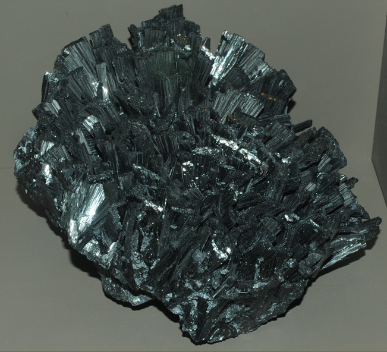

|

| MnO(OH)
This sample of manganite is displayed in the Smithsonian Museum of Natural History. Manganite is a oxide mineral of manganese with the composition MnO(OH). The sample at left is about 25 cm across and is from Ilfeld, Harz Mountains, Germany.
|